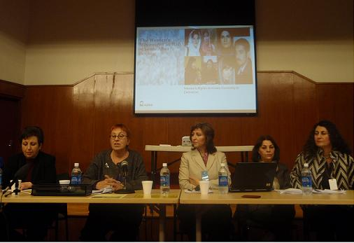

|
|

پانل فعالان حقوق زن از ایران درکمیسیون موقعیت زنان: جنبش زنان ایران پانزده سال پس از پکن
تهیه و تنظیم از رضوان مقدم
پنج شنبه19 فروردین 1389
تغییر برای برابری :چهارشنبه چهارم ماه مارس 2010، سالن اصلی سل ویشن آرمی* شاهد برگزاری پانل فعالان حقوق زن از ایران بود که برای شرکت در پنجاه و چهارمین کنفرانس کمیسیون موقعیت زن به دعوت آیدوس به نیویورک رفته بودند. عنوان این پانل "جنبش زنان ایران پانزده سال پس از پکن" بود که در آن شیرین عبادی، رضوان مقدم، ناهید جعفری، فرانک فرید ،و پروین اردلان شرکت داشتند . این پانل توسط خانم دانیلا کلمبو، رئیس آیدوس؛ انجمن ایتالیایی زنان در توسعه مدیریت می شد.
در ابتدا خانم شیرین عبادی گفتند که مایل هستند تا بعنوان یک وکیل که سابقه قضاوت هم دارند به قوانینی اشاره کنند که علیه زنان تبعیض آمیز و تحقیر آمیز هستند و ضمن تشریح همه قوانین تبعیض آمیز در مورد قانون شهادت در دادگاه که شهادت دو زن برابر شهادت یک مرد است، گفتند: اگرجلوی چشم من که حقوق دان و وکیل هستم جرمی اتفاق بیفتد، شهادت من به تنهایی قابل قبول نیست و ارزش آن نصف شهادت مردی است که نظافت دفتر کار من را بر عهده دارد و من به او حقوق پرداخت می کنم. ". خانم عبادی با اشاره به برخی از تغییرات در قوانین تبعیض آمیز علیه زنان در دوره حاکمیت اصلاحات از جمله قانون حضانت که طبق آن حضانت کودک تا 7 سالگی به مادر تعلق می گیرد و بعد از آن دادگاه تصمیم می گیرد، گفتند که این تغییرات کافی نیستند و همه قوانین تبعیض آمیز علیه زنان باید عوض شوند. خانم عبادی همچنین اشاره داشتند که زنان موفقیت های زیادی دراثر مبارزات خود به دست آورده اند اما هنوز راه درازی در پیش است.

سخنران بعدی، رضوان مقدم بود که دانیلا کلمبو او را بعنوان یکی از فعالان جنبش زنان معرفی کرد که بیش از 25 سال است در این حوزه فعالیت می کند وعلاوه بر فعالیت های مختلف در حوزه توسعه، از اعضای کمپین یک میلیون امضا برای تغییر قوانین نابرابر و مادران صلح است. عنوان سخنرانی رضوا ن مقدم "وضعیت زنان ایران 15 سال پس از کنفرانس پکن" بود.
رضوان مقدم با اشاره به اینکه سخنانش حاصل تحقیقاتی است که تحت عنوان نیازها و خواسته های زنان انجام شده، گفت که کنفرانس پکن در سال 1995 آثار مثبتی در ایران داشت و آن تغییر نگرش برخی از مقامات به حقوق زنان بود و این امر فضایی ایجاد کرد که تعدادی از تشکل های غیر دولتی بتوانند با استفاده از آن برای قدرتبخشی به زنان فعالیت کنند. اما علیرغم تلاش فعالان حقوق زن برای تغییر نگرش مقامات و قوانین تبعیض آمیز، تغییرات اساسی در این حوزه ها صورت نگرفت ودرست برعکس، فعالان زنان بعنوان عاملین تهدید امنیت ملی معرفی شدند و مورد آزارو اذیت، بازداشت، احکام زندان و شکنجه قرار گرفتند. سپس ایشان با ارائه مستندات و آمار به وضعیت زنان دربرخی از محورهای کنفرانس پکن پرداخت وزنانه شدن فقر ، نابرابری دردسترسی زنان به رسانه ها ، نابرابری در حوزه بهداشت و آموزش و وجود قوانین تبعیض آمیز علیه زنان را تشریح کرد . وی در مورد سهم زنان از رسانه ها چنین گفت:
" حاکم بودن فرهنگ مرد سالار بر فضای رسانه ها و مطبوعات و گرایش به تک صدایی کردن ،سانسور اخبار مربوط به فعالان حقوق زن انتشار اخبار و تحلیل های نادرست از فمینیسم در تلویزیون و برخی روزنامه ها، نا برابری در توزیع زمان، بودجه و فضا ی رسانه نیز بخشی از توزیع نا عادلانه منابع و امکانات است. زنان در مدیریت کلیدی رسانه ها نقشی ندارند. نا برابری در این حوزه سبب گرایش بیشتر زنان به استفاده ازاینترنت و فضای مجازی شده، اما اغلب سایت هایی که به موضوعات مربوط به زنان می پردازند با مشکل سانسور و مسدود شدن روبرو شده اند. لازم به یادآوری است که تاکنون اکثر وب سایت های متعلق به فعالان جنبش زنان فیلتر شده است. برای نمونه سایت «زنستان» پس از 7 بار فیلتر شدن و تغییر آدرس، سرانجام به طور کامل مسدود شد. سایت تغییر برای برابری 21 باروچند سایت دیگر از جمله کانون زنان ایرانی و سایت میدان زنان هم چند بار فیلتر شدهاند. سایت مدرسه فمینیستی، تا کنون 12 بارفیلتر شده است . این فشار ها در راستای یک اقدام منظم و از پیش تعیینشده برای جلوگیری از حرکت جنبشهای زنان و سایتهای مربوط به آن هاست. به علاوه زنان هنرمند نیز در عرصه تاتر، سینما،و رادیو تلویزیون با محدودیت های ویژه ای مواجه اند. بنا براین مشاركت و دسترسي زنان به رسانه ها، فن آوري هاي اطلاعات و ارتباطات به عنوان وسيله پيشرفت و توانمندسازي زنان با محدویت های بسیار روبرواست"
پس از سخنان رضوان مقدم، حضار با اجرای یک تئاتر تک نفره توسط ناهید جعفری روبرو شدند؛ زن مستاصلی که دربه در بدنبال همسرش می گردد تا اجازه عمل جراحی پسرش را امضا کند که دچار بیماری نارسایی قلبی و در بیمارستان بستری است، زنی که برای بردن پسرجوانتر المپیادی اش به خارج از کشور برای شرکت در مسابقه، باز هم نیاز به مجوز همسرش دارد، دختر25 ساله اش قصد ازدواج دارد و پدر باید اجازه بدهد، و برداشت از حسابی که این زن برای پسر جوانش باز کرده نیز از اختیارش خارج است و باید شوهرش را پیدا کند تا او از این حساب برداشت کند.اجرای قوی این اپیزود که در آن بخشی از قوانین تبعیض آمیز علیه زنان به تصویر کشیده شده بود، مورد تشویق مدعوین قرار گرفت. سپس دانیلا خطاب به حضار گفت آنچه که شاهدش بودند نمونه ای از نمایش هایی است که ناهید جعفری به همراه سایر دوستانش در ایران برای آگاه سازی زنان از قوانین تبعیض آمیز اجرا می کنند. دانیلا کلمبو در معرفی ناهید جعفری گفت " وی از جمله فعالان حقوق زن است که کارگاه های خشونت علیه زنان را در اقصی نقاط کشور و برای اقشار مختلف زنان اجرا می کنند. او در اینجا از تجربیات خودش خواهد گفت. سپس ناهید جعفری سخنان خود را تحت عنوان "تجربیاتی از تلاش برای شکستن تابوی سکوت زنان در مقابل خشونت خانگی" ارائه کرد. او با نشان دادن تاثیر قوانین تبعیض آمیز در اعمال خشونت علیه زنان و ارائه آمارهای رسمی کشوری در این حوزه، به گزارشی از تاثیر کارگاه های خشونت علیه زنان در شکستن سکوت آنها پرداخت و گفت علیرغم همه سختی ها در شرایطی که نمی شود کار مهمی برای خشونت علیه زنان کرد، شکستن این سکوت بزرگترین دستآورد توسط زنان برای کمک به خودشان است.
سخنران سوم، فرانک فرید فعال حقوق زنان و نویسنده و شاعر از آذربایجان بود که به سخنرانی در باره قومیت ها و زنان در ایران پرداخت. فرانک فرید عنوان سخنرانی خود را "اهل کجایی؟" گذاشت تا نشان دهد که اهل کجا بودن تشدید کننده تبعیض علیه زنان است . فرانک فرید در سخنان خود با نشان دادن زمینه های کلی تبعیض علیه قومیت ها و تبعیض علیه زنان، تلاش کرد که نشان دهد که تبعیض علیه زنان در بستر کلی تبعیض علیه اقوام، فشار بر زنان قومیت ها را چند برابر می کند. فرانک فرید با ذکر نمونه "راحله" از خطه آذربایجان که در اثروجود قوانین تبعیض آمیز و ازدواج اجباری، به جرم همسرکشی در زندان بود، نشان داد که بی توجهی به زبان راحله،و تحمیل وکیل تسخیری فارس برای او، راحله را از درک حرف های وکیل ناتوان می کرد وباعث می شد که او نتواند از خود دفاع کند. فرانک فرید در فراز هایی از سخنان خود گفت :
"نژاد، قومیت، جنسیت، زبان و فرهنگ، طبقات اجتماعی، مذهب و منطقه ی سکونت و عدم توانایی و ... جزو عواملی هستند که نابرابری و تبعیض ایجاد می کنند. اغلب زنان ما، با بیشتر این تبعیضها مواجهند و در شرایط پیچیده ی برآمده از این نابرابریها، زنان اعتماد به نفس خود را از دست می دهند و خود را در هم شکسته می یابند."
فرانک فرید با اشاره به مواردی از جمله ختنه دختران در مناطقی که برخی از قومیت های ایران در آنجا ساکن هستند، ازدواج های احباری و عدم ثبت این ازدواج ها ، اعتیاد و سایر موارد ناشی از فقر و تبعیض در سیستان و بلوچستان نشان داد که عدم توجه به قومیت ها چگونه فشار بر زنان را چند برابر کرده است. فرید با تاکید بر شدت مهاجرت مردان در همه مناطق قومیت نشین که حاصل تبعیض علیه قومیت هاست، تاکید کرد که وقتی که مردان محل سکونت خود را ترک می کنند، نه تنها تاثیرات منفی در این مناطق ایجاد می شود بلکه اثرات منفی آن و بار شدیدآن بر دوش زنانی می افتد که در مناطق قومی به سکونت خود ادامه می دهند. با این وجود، فرانک فرید تاکید کرد که زنان آذربایجان که او نیز از فعالان همان خطه است، همچنان بر حقوق خود پافشاری می کنند و حاضر نیستند که از هیچ یک از آنها صرف نر کنند.
آخرین سخنران این نشست، پروین اردلان؛ روزنامه نگار، فعال حقوق زن و از فعالان کمپین یک میلیون امضا برای تغییر قوانین نابرابر بود که به بررسی راهبردهای جنبش های زنان پرداخت. پروین اردلان در این راهبردها به سه ویژگی جنبش زنان بویژه در کمپین یک میلیون امضا پرداخت که عبارت بودند از ساختار افقی، تمرکز زدایی و آگاهی سازی. در توضیح ساختار افقی، وی اشاره کرد که هستند جنبش های مردمی ای که از ساختار هرمی نیز برخوردارند و فعالیت شان اثرگذار در روابط بین افراد و نتایج کاراست اما به طور کلی برای یک جنبش مردمی، روند و چگونگی به همان اندازه که چه هدف و نتیجه ای را دنبال می کند اهمیت دارد. مثلا در ساختار غیر هرمی و افقی کمپین یک میلیون امضا برای تغییر ، هدف مشترک، روند دموکراتیک و روش چهره به چهره و بردن موضوع تغییر قوانین به درون خانه ها، ماهیت غیر هرمی و مردمی به کمپین داد که باعث ظرفیت سازی برای همه افراد در جنبش شد. اردلان در تمرکززدایی اشاره کرد که آگاه سازی و انتشار تجربیات منجر به افزایش ظرفیت ها و پتانسیل هایی شد که به کمپین پیوستند، بخصوص در وضعیتی که دولت، فعالان حقوق زن را هدف آزار و اذیت قرار داد، این تمرکز زدایی منجر به انتقال فعالیت از یکی به دیگری می شد. او در مورد آگاه سازی با اشاره به روش چهره به چهره در ارتقاء آگاهی، به نمایش های خیابانی، جمع آوری امضا که منجر به درگیر کردن خانواده ها به موضوعات مورد بحث و در ننتیجه درگیر کردن جامعه با موضوع قوانین تبعیض آمیز می شد، اشاره کرد. .
پس از پایان سخنرانی، سوال و جواب هایی بین شرکت کنندگان و پانلیست ها رد و بدل شد. علیرغم ناآرامی ای که توسط دو نفر از حضار که بعنوان نمایندگان تشکل های غیر دولتی اهل بیت و عاشقان صلح از ایران در این کنفرانس شرکت داشتند و به جای سوال کردن به مدت طولانی ای به توهین به خانم عبادی پرداختند که مورد اعتراض مردم قرار گرفت، این نشست با شور و هیجان خاصی و با تشویق حضار و همکاری پرسنل سل ویشن آرمی که یکساعت و نیم بیش از زمان اختصاصی به پانل امکان حضور مردم را در سالن فراهم کرده بودند، در ساعت 7 شب بپایان رسید.